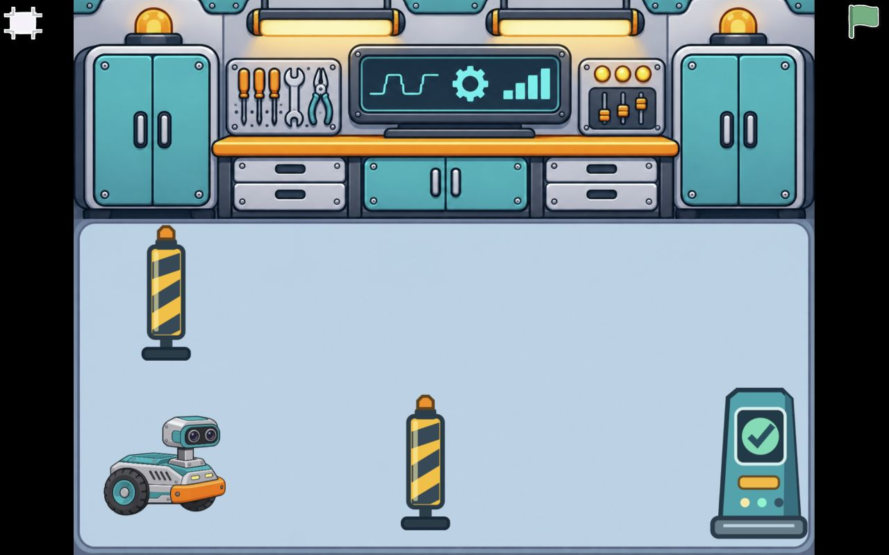

8–20 min
1. Frâna de siguranță
Contactul oprește mersul și pornește retragerea. Mutăm bariera; același cod trebuie să frâneze mai devreme.
Lecția 06 · 60 de minute · robotică pe ecran
Atelierul se pregătește pentru lucru. Robotul trebuie să ajungă la stația de control. Când întâlnește o barieră, frânează, se retrage și ocolește. La stație, inspecția se încheie.
Proiect de pornire fără cod · SJR
Plan + toate programele cu capturi · PDF · Ghidul profesorului
La curier, traseul era stabilit dinainte. Aici contactul cu un personaj pornește reacția: portocaliu pentru evitare, albastru pentru oprirea la stație. Simulăm un senzor de contact; nu detectăm obstacole de la distanță.

8–20 min
Contactul oprește mersul și pornește retragerea. Mutăm bariera; același cod trebuie să frâneze mai devreme.
20–32 min
Robotul se retrage, emite Pop și trece pe lângă zona închisă. Urcarea și coborârea îl readuc pe traseu.
35–48 min · dificil · pentru toți
După ocol robotul continuă. Un alt semnal, trimis de stație la contact, oprește definitiv inspecția.
48–58 min · creație
Alegem locul barierei și lățimea ocolului. Păstrăm oprirea finală și probăm propriul traseu.
Rezervă · +5 min
Schimbăm viteza. Comparăm durata și verificăm că reacțiile la contact funcționează în continuare.
Rezervă · +10 min
Aducem a doua barieră pe traseu. Robotul folosește aceeași reacție de două ori, apoi ajunge la stație.
Toate părțile dificile sunt în baza lecției. PDF-ul are 12 pagini: planul concis, pregătirea și capturi reale cu toate firele fiecărui personaj, inclusiv creația și ambele rezerve.
În ScratchJr Desktop Reborn, apasă Open în galerie și alege fișierul SJR. Deschide cardul L06 Atelier cu etapa dorită și sufixul v2.1. Înainte de fiecare probă: Stop dacă rulează, Reset Characters, apoi un singur steag. Starterul nu se mișcă, deoarece nu are cod.
Pe tablete pregătim numai starterul, înaintea orei. Instrucțiuni și verificarea pe Lenovo.
Blocul standard La ciocnire pornește la contactul dintre personaje. Bariera trimite portocaliu; stația trimite albastru. Robotul primește fiecare culoare într-un fir separat. Fundalul și camerele desenate nu detectează obstacole.
Ghid complet · PDF cu capturi · Lista proiectelor · PDF-ul cursului · lecțiile 1–6
Ce am testat în browser · Resursele originale · Observații după oră
Ghid vechi · PDF vechi · Instrucțiuni vechi · Cartonașe vechi · ZIP vechi.